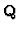

Computation of Moduli, Periods and Modular Symbols
Nikolaj M. Glazunov
Glushkov Institute of Cybernetics NAS
252650 Ukraine Kiev GSP-650 Glushkov prospekt 40
Email: glanm@d105.icyb.kiev.ua
Abstract
The subject matter of this communication lies in the
area of computation moduli, periods and modular symbols of
algebraic curves. Let S be the Riemann surface of algebraic
curve C of genus g. The set of 6g - 6 real parameters
which determines the conformal class of the surface S is
called the moduli of C. For instance, the moduli of
elliptic curve over complex numbers is its modular invariant.
The integral of integer holomorphic differential of C along
generator of 1-homology group of S is the period of C.
Periods of C determine the Jacobian variety of C. The set
of all periods of curves of given genus determines the
space of periods. There is a mapping from moduli variety
of curves of given genus to their space of periods (morphism
of periods). By Torelli theorem the morphism is an inclusion.
An integral of holomorphic differential 1-form along geodesic
line connecting angles of a compact Riemann surface is a
modular symbol. The modular symbols was introduced by B. Birch.
Modular symbols for computation of periods of modular forms
of weight 2 were considered and investigate by Ju. Manin,
H. Swinnerton-Dyer and B. Mazur. Some Manin's results were generalized
by V. Drinfel'd and V. Shokurov.
The A. Wiles proving of Shimura-Taniyama conjecture gives
possibility of computation of the number of generators of Mordell-Weil
group of elliptic curves over 
.
By D. Goldfeld the modular
symbols can be computed in polynomial time.
On the base of investigation of the results the problems of
computation of modular symbols are discussed. Algorithms have
been developed for computation of (i) moduli and periods of elliptic
curves and algebraic curves of genus 2 and 3; (ii) modular symbols
of modular forms of the weight grater or equal 2. Computation of
moduli, periods and modular symbols are included.
IMACS ACA'98 Electronic Proceedings